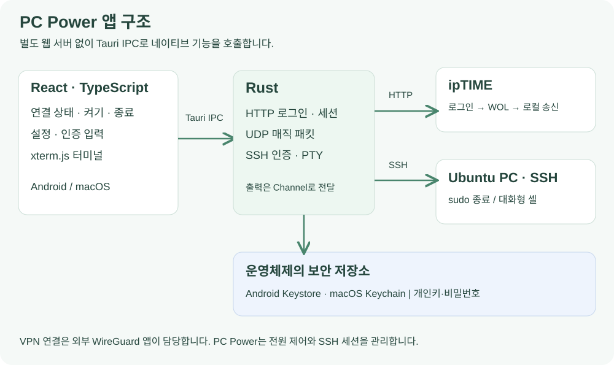

Tauri 기반 앱 구조
PC Power는 공유기 관리 화면을 매번 열지 않고 전원 제어와 SSH 접속을 하기 위해 AI 코딩 도구로 개발한 앱입니다. 기능과 화면 동작을 정하고, Fold5에서 직접 테스트한 결과를 바탕으로 코드를 수정했습니다.
PC Power는 Tauri 2의 설치형 앱입니다. React·TypeScript가 화면을 만들고, Rust가 공유기 HTTP 요청, UDP 송신, SSH 연결과 인증 정보 처리를 맡습니다. Android와 macOS는 이 화면과 핵심 로직을 공유합니다. Android의 보안 저장소·키보드·텍스트 선택처럼 운영체제와 직접 맞닿는 부분은 Kotlin 코드로 연결했습니다.
별도 웹 서버를 두지 않고 React가 Tauri IPC로 네이티브 명령을 호출합니다. SSH 터미널 출력은 Tauri Channel로 화면에 전달하며, 화면의 입력과 크기 변경은 같은 SSH 세션으로 보냅니다.

ipTIME 로그인과 WOL 요청
ipTIME 연동은 공개 REST API가 아니라 현재 사용하는 공유기 관리 화면의 HTTP 요청을 처리하는 어댑터입니다. Rust의 reqwest가 쿠키를 유지하며 요청하고, HTML 응답을 읽어 로그인 여부와 등록된 WOL 대상을 판별합니다.
로그인 화면을 읽은 뒤 사용자 이름과 비밀번호를 전송하고, 발급받은 세션으로 WOL 목록을 조회합니다. 앱에 설정된 MAC이 등록된 대상인지 확인한 뒤 해당 MAC 하나에 대해 깨우기를 요청합니다. HTTP 상태 코드가 200이라는 이유만으로 성공 처리하지 않고, 로그인 화면으로 돌아갔는지와 실제 응답 내용을 확인합니다.
보안문자가 필요하면 해당 로그인 흐름의 쿠키를 유지한 채 이미지를 표시합니다. 사용자가 입력한 문자를 같은 세션에서 제출하고, 만료되면 다시 불러옵니다. 공유기 응답을 자동으로 반복 전송해 중복 WOL 요청이 발생하지 않도록 했습니다.
직접 UDP 방식에서는 FF 6바이트와 대상 MAC 16회를 이어 붙인 102바이트 매직 패킷을 구성합니다. 브로드캐스트 또는 특정 IPv4 주소와 포트를 선택할 수 있습니다. 현재 집의 VPN 구성에서는 ipTIME 요청 방식을 기본으로 사용합니다.
연결 상태와 작업 결과 표시
홈 화면에서는 공유기 접속 상태와 PC의 SSH 응답을 각각 표시합니다. 공유기 TCP 포트에 연결됐다는 것은 접속 경로가 있다는 의미이며, 로그인 성공이나 PC 전원 상태까지 뜻하지는 않습니다.
켜기를 누르면 공유기 접속과 WOL 요청을 진행한 뒤 PC의 SSH 포트 응답을 기다립니다. 요청 수락과 부팅 후 응답을 별개로 다루므로, 아직 부팅 중인 상황을 요청 실패와 구분할 수 있습니다. 정해진 시간 안에 SSH가 응답하지 않으면 응답 대기 결과를 표시하며, 이를 곧바로 물리 전원 꺼짐으로 취급하지 않습니다.
종료 창도 요청 중에 바로 닫지 않습니다. 비밀번호 오류·권한 부족과 실행 결과를 창에 표시하고, 인증이 실패하면 비밀번호를 수정해 다시 시도할 수 있도록 했습니다.
SSH를 이용한 PC 종료
WOL은 켜기만 담당하므로, 종료는 Rust의 russh로 PC에 SSH 로그인한 뒤 수행합니다. SSH 서버의 호스트 키 지문을 저장된 신뢰 정보와 비교하고 개인키로 인증합니다.
종료 명령은 /usr/bin/systemctl poweroff로 고정했습니다. 필요한 sudo 권한을 확인하고, 비밀번호가 필요하면 표준 입력으로 전달합니다. 비밀번호는 명령 인자에 포함하지 않습니다.
종료 요청이 이미 수락된 뒤 인증 정보 저장에서 문제가 생긴 경우에는, 저장 실패를 이유로 종료 명령을 다시 보내지 않도록 처리했습니다.
SSH 터미널과 Fold5 화면 대응
터미널을 열면 SSH 연결 안에 PTY를 요청하고 셸을 시작합니다. 서버 출력은 xterm.js에 쓰고, 키 입력은 SSH 채널로 보냅니다. 화면이나 키보드 때문에 터미널 크기가 달라지면 행·열 수를 다시 계산해 PTY에 전달합니다. 이 경로로 편집기와 셸의 대화형 동작을 처리합니다.
터미널에서 뒤로가기를 누르면 화면만 닫고 기존 세션은 유지합니다. 다시 열 때 같은 출력을 보여주며, 별도의 종료 버튼으로 연결을 끊습니다. 설정 화면을 다녀와도 다시 로그인할 필요가 없습니다.

Fold5에서는 접거나 펼쳐도 터미널이 전체 화면을 사용하도록 했습니다. Android 키보드가 차지하는 영역을 반영해 WebView와 PTY 크기를 줄이며, 키보드를 닫은 뒤 다시 열 때의 포커스도 별도로 처리합니다. 특수키 줄은 같은 위치에서 접고 펼칩니다.
모바일의 텍스트 선택은 터미널의 마우스 선택을 그대로 사용하지 않고 Android 기본 선택 핸들과 메뉴를 사용합니다. 선택 중인 텍스트 표시를 고정해 실시간 출력 때문에 선택이 밀리는 것을 줄였고, 복사·공유와 설치된 ChatGPT의 텍스트 처리 동작을 메뉴에 연결했습니다.
인증 정보 저장
주소·포트 같은 일반 설정과 개인키·비밀번호를 분리했습니다. Android는 Keystore의 키로 암호화해 앱 전용 공간에 보관하고, macOS는 Keychain을 사용합니다. 공유기와 SSH의 인증 정보도 구분해 저장합니다.
WireGuard는 사용자가 별도 앱에서 연결합니다. PC Power가 VPN 키나 터널 서비스를 함께 관리하지 않도록 역할을 나눴습니다. VPN 연결과 종료는 WireGuard 앱에서 조작합니다.
VPN 접속 문제와 해결 과정은 프로젝트 소개에서 확인할 수 있습니다.